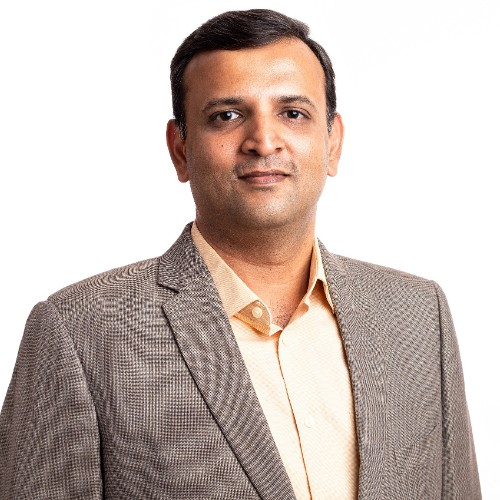

Founder
Technology decisions shape organisations for many years. They should be guided by experience, judgment, and a deep understanding of how organisations grow.

For nearly three decades, Shivaprakash D has helped organisations use technology to strengthen business capability, improve customer experience, and support sustainable growth.
Beginning his career as a software engineer, he progressed through enterprise delivery and technology leadership before becoming Co-founder, Whole-time Director, and Chief Information Officer at IIFL Samasta Finance. During his 17 years at IIFL Samasta Finance, his responsibilities expanded beyond technology leadership to helping shape the organisation's broader direction, bringing together business strategy, technology, governance, and operational transformation to support long-term growth.
A Perspective Shaped by Experience
His journey shaped a simple conviction: technology is not an end in itself. It is one of the most significant enablers of business capability, operational resilience, customer experience, and long-term organisational growth.
The most significant technology decisions are rarely about technology alone. They are decisions about organisational capability, business priorities, investment, risk, and the future the organisation is seeking to build.
Through Sapience, Shivaprakash helps organisations across the lending ecosystem make significant technology decisions, drawing on practical experience in technology leadership, organisational transformation, and aligning business strategy with technology.
Every engagement is guided by the belief that significant technology decisions should not only solve today's challenges but also strengthen the organisation the business is seeking to build.